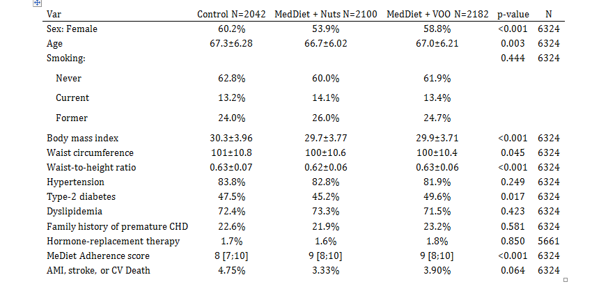

Example 1: Descriptives of variables
example1.RmdSeveral types of statistics (mean, standard deviation, quantiles or frequencies) are displayed according to the nature of each variable (categorical, continuous and normal-distributed or other quantitative type distribution). Also, p-value to test equality between groups is computed using the appropiate test.
Step 3. Compute descriptives and tests
Compute all descriptives and tests from selected variables by using the compareGroups function.
Note the use of formula argument as usual in R, so “.” indicates all variables in the dataset while “-” sign indicates removing, and variable on left side of “~” sign indicates the groups (if descriptives of whole datset without separating by groups is desired left it in blank). Store the results in an object that can be used afterwards to perform plots or bivariate table itself.
By the argument method we set wtn and p14 varible to be reported as median and quartiles instead of mean and standard deviation.
Step 4. Create the descriptive table
Use the creaTable function passing the previous object computed by compareGroups function (res). Using this function you can customize how categorical variables are displayed (only percertage or absolute frequencies or both) by type argument or whether standard deviation appears inside brackets or separated by plus/minus symbol by sd.type argument.
Also note the use of hide.no category which is useful to hide “no” level for those binary variables.
If you only want to show “Female” category use hide argument for sex variable indicating which category is going to be hiden. This argument also applies to categorical variables with more than two categories. To specify the number of decimal digits to show use digitsarguments. In this example p14 have no decimals and for hormo only one digit. Finally, if you want to show how many individuals have non-missing values in each described variable, set hide.n argument to TRUE.
Step 5. Print or export the descriptive table
Print on R console
The descriptive table can be printed in the R console using the method print, i.e. just typing the name of the object:
--------Summary descriptives table by 'Intervention group'---------
_____________________________________________________________________________________
Control MedDiet + Nuts MedDiet + VOO p.overall N
N=2042 N=2100 N=2182
¯¯¯¯¯¯¯¯¯¯¯¯¯¯¯¯¯¯¯¯¯¯¯¯¯¯¯¯¯¯¯¯¯¯¯¯¯¯¯¯¯¯¯¯¯¯¯¯¯¯¯¯¯¯¯¯¯¯¯¯¯¯¯¯¯¯¯¯¯¯¯¯¯¯¯¯¯¯¯¯¯¯¯¯¯
Sex: Female 60.2% 53.9% 58.8% <0.001 6324
Age 67.3±6.28 66.7±6.02 67.0±6.21 0.003 6324
Smoking: 0.444 6324
Never 62.8% 60.0% 61.9%
Current 13.2% 14.1% 13.4%
Former 24.0% 26.0% 24.7%
Body mass index 30.3±3.96 29.7±3.77 29.9±3.71 <0.001 6324
Waist circumference 101±10.8 100±10.6 100±10.4 0.045 6324
Waist-to-height ratio 0.63±0.07 0.62±0.06 0.63±0.06 <0.001 6324
Hypertension 83.8% 82.8% 81.9% 0.249 6324
Type-2 diabetes 47.5% 45.2% 49.6% 0.017 6324
Dyslipidemia 72.4% 73.3% 71.5% 0.423 6324
Family history of premature CHD 22.6% 21.9% 23.2% 0.581 6324
Hormone-replacement therapy 1.7% 1.6% 1.8% 0.850 5661
MeDiet Adherence score 8 [7;10] 9 [8;10] 9 [8;10] <0.001 6324
AMI, stroke, or CV Death 4.75% 3.33% 3.90% 0.064 6324
¯¯¯¯¯¯¯¯¯¯¯¯¯¯¯¯¯¯¯¯¯¯¯¯¯¯¯¯¯¯¯¯¯¯¯¯¯¯¯¯¯¯¯¯¯¯¯¯¯¯¯¯¯¯¯¯¯¯¯¯¯¯¯¯¯¯¯¯¯¯¯¯¯¯¯¯¯¯¯¯¯¯¯¯¯ If you want to change some bivariate table header, such “p-value” instead of “p.overall” use header.labels argument:
--------Summary descriptives table by 'Intervention group'---------
___________________________________________________________________________________
Control MedDiet + Nuts MedDiet + VOO p-value N
N=2042 N=2100 N=2182
¯¯¯¯¯¯¯¯¯¯¯¯¯¯¯¯¯¯¯¯¯¯¯¯¯¯¯¯¯¯¯¯¯¯¯¯¯¯¯¯¯¯¯¯¯¯¯¯¯¯¯¯¯¯¯¯¯¯¯¯¯¯¯¯¯¯¯¯¯¯¯¯¯¯¯¯¯¯¯¯¯¯¯
Sex: Female 60.2% 53.9% 58.8% <0.001 6324
Age 67.3±6.28 66.7±6.02 67.0±6.21 0.003 6324
Smoking: 0.444 6324
Never 62.8% 60.0% 61.9%
Current 13.2% 14.1% 13.4%
Former 24.0% 26.0% 24.7%
Body mass index 30.3±3.96 29.7±3.77 29.9±3.71 <0.001 6324
Waist circumference 101±10.8 100±10.6 100±10.4 0.045 6324
Waist-to-height ratio 0.63±0.07 0.62±0.06 0.63±0.06 <0.001 6324
Hypertension 83.8% 82.8% 81.9% 0.249 6324
Type-2 diabetes 47.5% 45.2% 49.6% 0.017 6324
Dyslipidemia 72.4% 73.3% 71.5% 0.423 6324
Family history of premature CHD 22.6% 21.9% 23.2% 0.581 6324
Hormone-replacement therapy 1.7% 1.6% 1.8% 0.850 5661
MeDiet Adherence score 8 [7;10] 9 [8;10] 9 [8;10] <0.001 6324
AMI, stroke, or CV Death 4.75% 3.33% 3.90% 0.064 6324
¯¯¯¯¯¯¯¯¯¯¯¯¯¯¯¯¯¯¯¯¯¯¯¯¯¯¯¯¯¯¯¯¯¯¯¯¯¯¯¯¯¯¯¯¯¯¯¯¯¯¯¯¯¯¯¯¯¯¯¯¯¯¯¯¯¯¯¯¯¯¯¯¯¯¯¯¯¯¯¯¯¯¯ Exporting to different formats
- Excel
If you want to create a PDF document with the table in a publish-ready format

- Word
Export to a Word.

If you want to create a PDF document with the table in a publish-ready format
Note: To create tables in PDF you must have some LaTeX compiler installed on your computer.
- Excel
If you want export the descriptive table to an Excel file:

Note: You must have xlsx R package installed.
- Markdown
You can translate to Markdown code and insert it in a R-markdown chunk to create reproducible reports.
| Control | MedDiet + Nuts | MedDiet + VOO | p-value | N | |
|---|---|---|---|---|---|
| N=2042 | N=2100 | N=2182 | |||
| Sex: Female | 60.2% | 53.9% | 58.8% | <0.001 | 6324 |
| Age | 67.3±6.28 | 66.7±6.02 | 67.0±6.21 | 0.003 | 6324 |
| Smoking: | 0.444 | 6324 | |||
| Never | 62.8% | 60.0% | 61.9% | ||
| Current | 13.2% | 14.1% | 13.4% | ||
| Former | 24.0% | 26.0% | 24.7% | ||
| Body mass index | 30.3±3.96 | 29.7±3.77 | 29.9±3.71 | <0.001 | 6324 |
| Waist circumference | 101±10.8 | 100±10.6 | 100±10.4 | 0.045 | 6324 |
| Waist-to-height ratio | 0.63±0.07 | 0.62±0.06 | 0.63±0.06 | <0.001 | 6324 |
| Hypertension | 83.8% | 82.8% | 81.9% | 0.249 | 6324 |
| Type-2 diabetes | 47.5% | 45.2% | 49.6% | 0.017 | 6324 |
| Dyslipidemia | 72.4% | 73.3% | 71.5% | 0.423 | 6324 |
| Family history of premature CHD | 22.6% | 21.9% | 23.2% | 0.581 | 6324 |
| Hormone-replacement therapy | 1.7% | 1.6% | 1.8% | 0.850 | 5661 |
| MeDiet Adherence score | 8 [7;10] | 9 [8;10] | 9 [8;10] | <0.001 | 6324 |
| AMI, stroke, or CV Death | 4.75% | 3.33% | 3.90% | 0.064 | 6324 |
- LaTeX
Similar to Markdown file, it is possible to insert LaTeX code in a .tex.